Felinos Majestosos
- 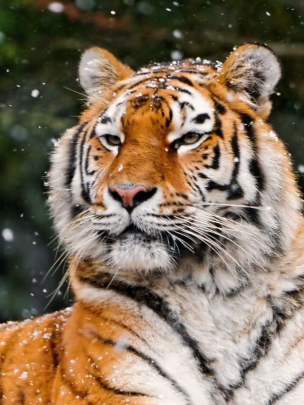
- 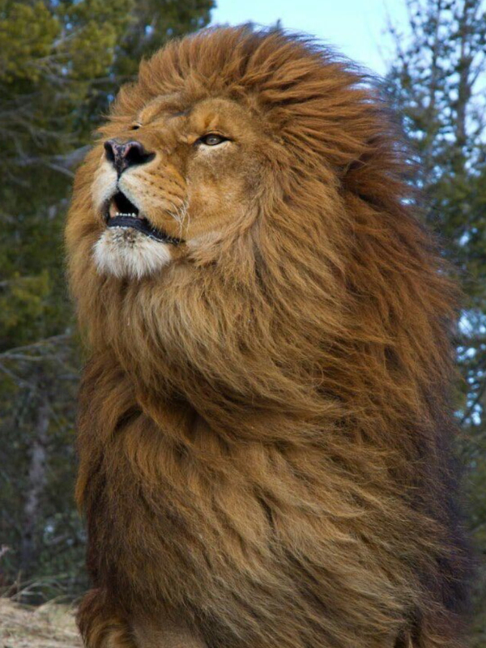
- 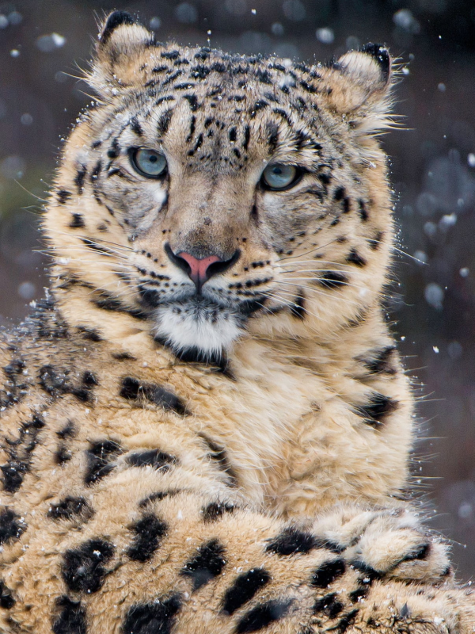
- 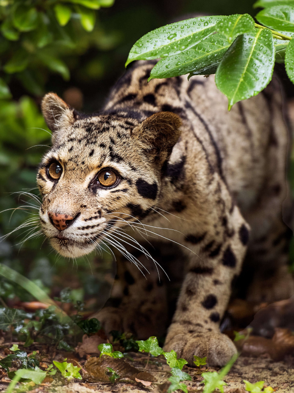
- 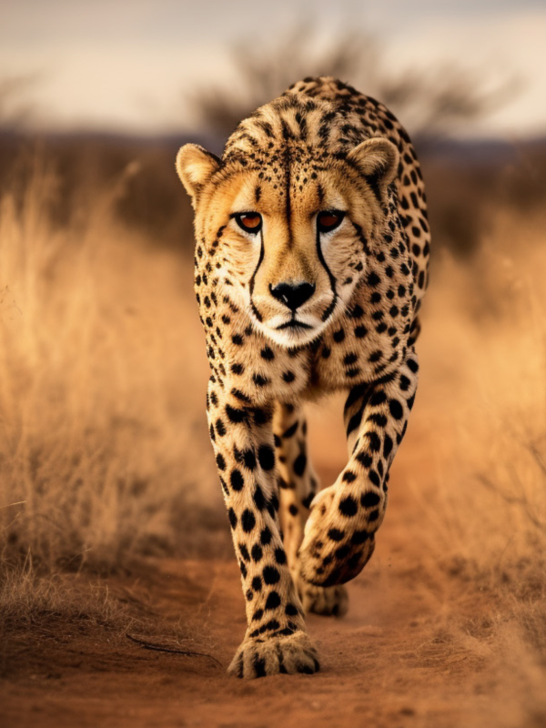
- 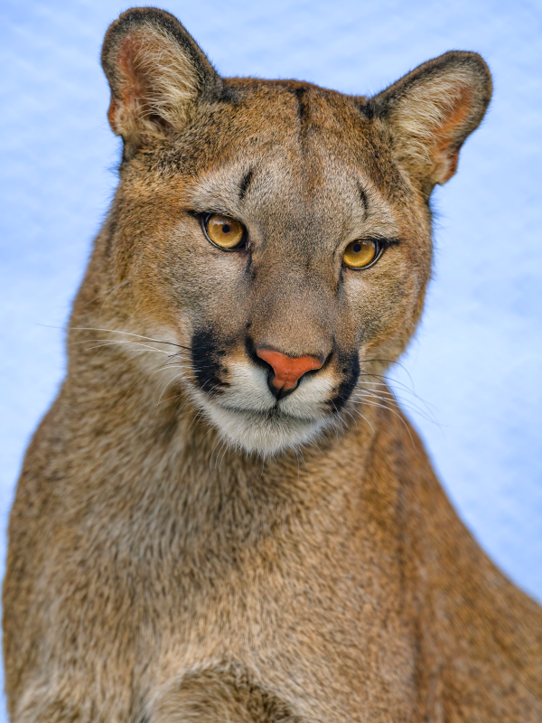
Tigre Siberiano
O tigre siberiano é o maior felino do mundo, com machos adultos podendo pesar até 300 kg. Este magnífico predador habita as florestas da Sibéria Oriental, adaptando-se ao frio extremo com sua pelagem densa e patas grandes que funcionam como raquetes de neve.
Os tigres siberianos são solitários e altamente territoriais, dependendo de vastas áreas para caçar presas como cervos e javalis. A conservação desta subespécie é crucial devido à sua população reduzida e ameaças como a caça furtiva e a perda de habitat.
Eles possuem uma força impressionante e são capazes de derrubar presas muito maiores que eles. A preservação do tigre siberiano é vital para manter o equilíbrio ecológico em seu habitat natural.
Além disso, o tigre siberiano é um símbolo cultural e espiritual em muitas regiões da Ásia, representando poder e coragem.
Leão Africano
O leão africano é o único felino que vive em grupos sociais conhecidos como coalizões, compostos de várias fêmeas, seus filhotes e um pequeno número de machos adultos. Eles habitam as savanas e pastagens da África Subsaariana.
Os leões são predadores de ápice, caçando em grupos para derrubar grandes presas como zebras e gnus. O rugido de um leão pode ser ouvido a até 8 km de distância, marcando território e comunicando-se com outros membros da coalizão.
A presença de leões é crucial para o controle populacional de outras espécies e manutenção do equilíbrio ecológico. A perda de habitat e o conflito com humanos são as principais ameaças à sua sobrevivência.
Além disso, os leões desempenham um papel importante no ecoturismo, atraindo visitantes e contribuindo para a economia local das regiões onde vivem.
Leopardo-das-neves
O leopardo-das-neves vive nas montanhas da Ásia Central, em altitudes de até 5.000 metros. Este felino solitário é conhecido por sua habilidade de se mover agilmente em terrenos íngremes e rochosos, saltando até 15 metros em um único pulo.
A pelagem espessa e manchada proporciona camuflagem eficaz nas paisagens nevadas. Caça principalmente íbex e carneiros selvagens, utilizando emboscadas para capturar suas presas. A conservação do leopardo-das-neves é desafiadora devido ao seu habitat remoto e fragmentado.
Esses felinos são extremamente elusivos, raramente vistos por humanos, o que dificulta a coleta de dados e a implementação de medidas de conservação eficazes.
O leopardo-das-neves é um símbolo de beleza e resistência nas culturas locais, sendo frequentemente mencionado em mitos e lendas regionais.
Jaguatirica
A jaguatirica é um felino de tamanho médio encontrado nas florestas tropicais e subtropicais da América Latina. Com um corpo ágil e membros fortes, ela é uma caçadora noturna que se alimenta de pequenos mamíferos, aves e répteis.
A pelagem é distintamente marcada com rosetas e listras, fornecendo excelente camuflagem nas densas vegetações. A jaguatirica é também uma excelente nadadora e escaladora, adaptada para a vida arborícola e terrestre. A degradação do habitat e a caça ilegal são as principais ameaças a esta espécie.
Além de suas habilidades de caça, a jaguatirica possui uma incrível capacidade de adaptação a diferentes habitats, o que a torna um dos felinos mais versáteis de seu gênero.
As jaguatiricas têm um papel importante nos ecossistemas onde vivem, ajudando a controlar as populações de suas presas e mantendo o equilíbrio ecológico.
Guepardo
O guepardo é um felino de porte médio conhecido por sua incrível velocidade, capaz de atingir até 100 km/h em curtas distâncias. Ele possui um corpo esguio, longas pernas e uma coluna flexível que facilitam a corrida.
Habita as savanas e planícies abertas da África, onde caça principalmente gazelas e outros pequenos ungulados durante o dia. Diferente de outros grandes felinos, os guepardos caçam à vista, utilizando sua velocidade para surpreender e capturar presas. A perda de habitat e a competição com outros predadores ameaçam sua sobrevivência.
Os guepardos são também conhecidos por sua visão excepcional, que lhes permite detectar presas a grandes distâncias. Eles dependem de sua velocidade e agilidade para caçar, mas sua estrutura física também os torna vulneráveis a lesões.
A conservação do guepardo é um desafio devido às mudanças no uso da terra e ao declínio das populações de presas. Esforços estão sendo feitos para proteger seus habitats e mitigar conflitos com humanos.
Puma
O puma, também chamado de leão-da-montanha, é um felino adaptável que vive desde o Canadá até a América do Sul. Eles são solitários e altamente territoriais, com machos dominando vastas áreas de caça.
Os pumas são conhecidos por sua força e agilidade, capazes de saltar longas distâncias para capturar presas variadas, desde pequenos roedores até cervos. Sua pelagem varia do marrom claro ao cinza, permitindo-lhes se camuflar em diferentes ambientes. A degradação do habitat e a perseguição humana representam grandes ameaças a esses felinos.
A conservação dos pumas é crucial para o equilíbrio dos ecossistemas, onde desempenham o papel de predadores de topo. Eles também são um símbolo cultural importante em muitas regiões das Américas.
FAQ
- Qual a idade dos animais?
- As raposas são animais mamíferos e onívoros pertencentes à família Canidae. São vulpídeos de porte médio, caracterizados por um focinho comprido e uma cauda longa e peluda.
- Eles são fantásticos?
- Também apresentam como particularidade suas pupilas ovais, semelhantes às pupilas verticais dos felinos, que se adaptam à visão noturna.
- Como entram em contato?
- Essa página é puramente fictícia, inspirada no conteúdo das aulas de JavaScript do curso Origamid. Todos os animais aqui apresentados são grandes felinos, conhecidos por suas características únicas e impressionantes.
- 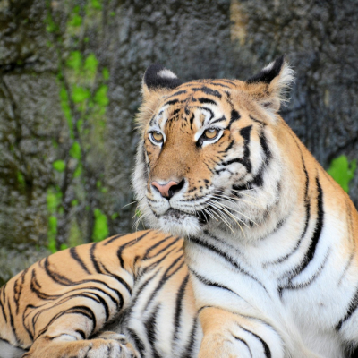
- 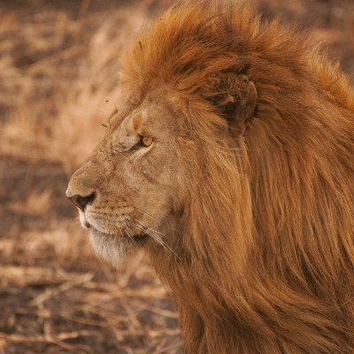
- 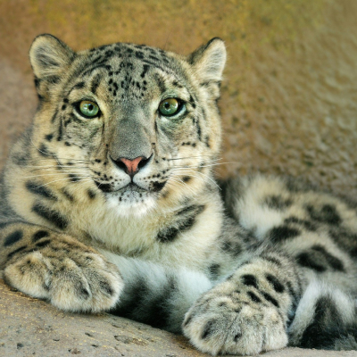
- 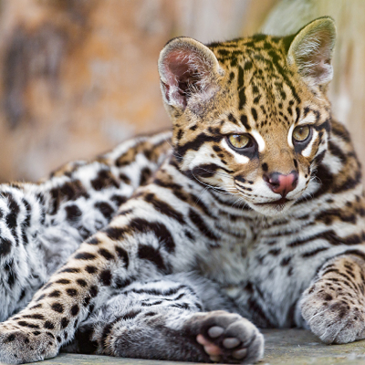
- 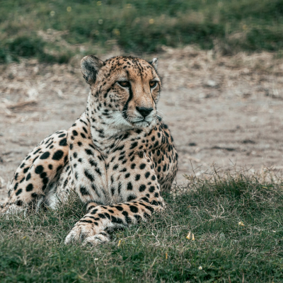
- 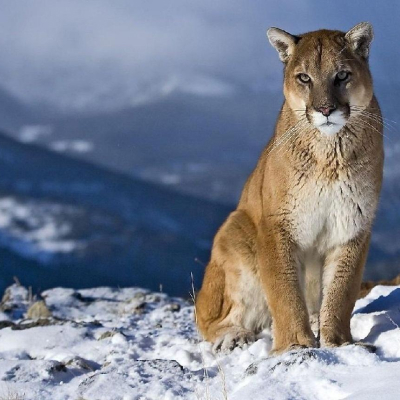
Números
Contato

- contato@origamid.com
- +55 (21) 9999-9999
- Rua do Conde, nº 21
- Rio de Janeiro - RJ
- Doe 0 bitcoin para nos ajudar
- Seg à Sex das 8 às 18